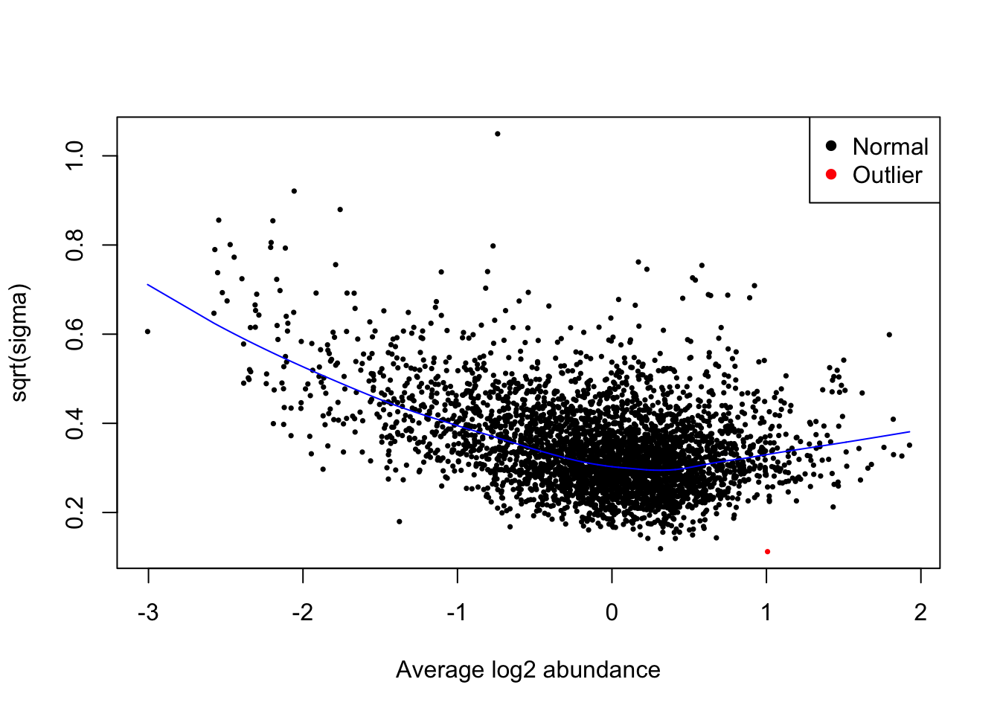
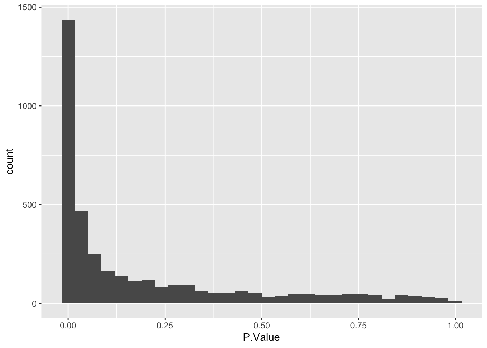
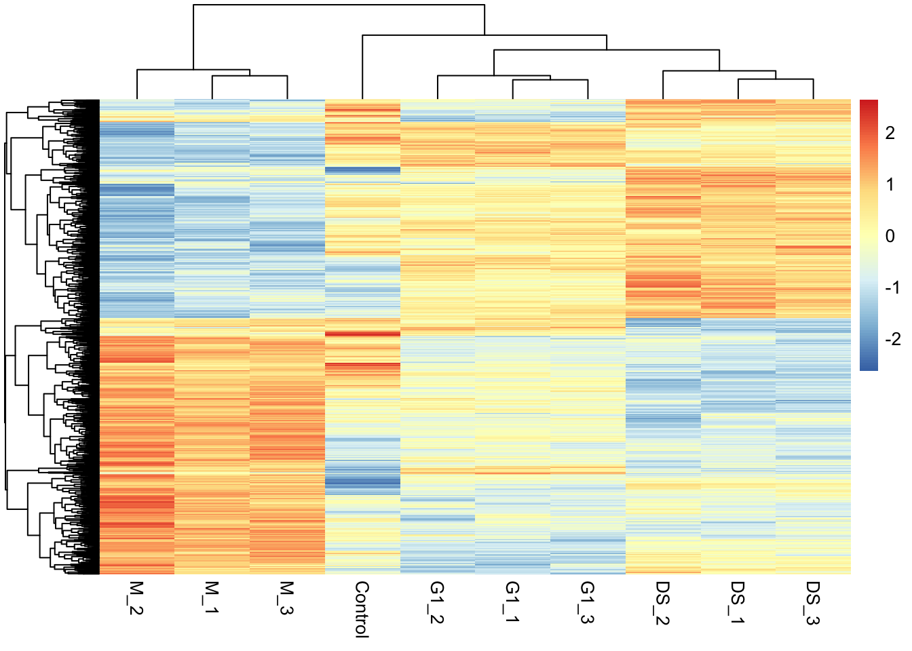

11 Statistical analysis of all cell cycle stages
Learning Objectives
- Using the
limmapackage (Smyth (2004)), design a statistical model to test for differentially abundant proteins between more than two conditions
Note
This workflow is an adjunct to the Statistical analysis section which demonstrates how to perform single comparison statistical with limma (Smyth (2004)). Please first read through that material, since it includes background explanations and clarifications which are not repeated here.
11.1 Differential expression analysis
Having cleaned our data, aggregated from PSM to protein level, completed a log2 transformation and normalised the data, we are now ready to carry out statistical analysis.
The aim of this section is to answer the question: “Which proteins show a significant change in abundance between the multiple cell cycle stages?”.
Our null hypothesis is: (H0) The mean protein abundance is the same across cell cycle stages.
Our alternative hypothesis is: (H1) The mean protein abundance differs across cell cycle stages.
We will use limma to perform the statistical tests using an empirical Bayes-moderated linear model. Please see the Statistical analysis section for more details about limma and its application in quantitative proteomics.
Depending on whether the linear model is used to perform single comparisons or multifactorial comparisons, the test statistic will either be a t-value or an F-value, respectively. Here, we will perform both, starting with assessing the overall effect of cell cycle with an F-test. The F-test does not tell us which groups are different to one another, only that the cell cycle stage does affect protein abundance. Later we will see how to perform all the pairwise comparisons with t-tests.
What is an F-value?
An F-value is a parametric statistical value used to compare the mean values of three or more groups. The F-value is the ratio of the between-group variation (explained variance) and the within-group variance (unexplained variance). The higher the F-value, the more significant the difference between the groups is.
What is a t-value?
A t-value is a parametric statistical value used to compare the mean values of two groups. The t-value is the ratio of the difference in means to the standard error of the difference in means. The further away from zero that a t-value lies, the more significant the difference between the groups is.
How is the p-value obtained?
A p-value may be obtained from a t-value/F-value by comparing the value against an t-value/F-distribution with the appropriate degrees of freedom.
- degrees of freedom = the number of observations minus the number of independent variables in the model
- p-value = the probability of achieving the t-value/F-value under the null hypothesis i.e., by chance
Here, we will start by performing a comparison between three groups (M phase, G1 phase and desynchronised) for each protein and obtain an F-value and p-value for each protein.
First, we extract the suitable protein experiment. We will remove the pre-treatment sample, since this condition is not replicated and so not amenable to statistical testing.
# extract the log-normalised experiment from our QFeatures object
all_proteins <- cc_qf[["log_norm_proteins"]]
# subset to exclude the pre-treatment sample
all_proteins <- all_proteins[, all_proteins$condition != 'Pre-treatment']11.1.1 Modelling with or without an intercept
When investigating the effect of a single explanatory categorical variable with more than two levels, a design matrix can be created using either model.matrix(~variable) or model.matrix(~0 + variable). The former will create a model that includes an intercept term, whilst the latter will not. If an intercept is included, the first level of the variable (here, M) is considered the ‘baseline’ and modeled by the intercept. The subsequent levels of the variable (here, G1 and Desynch) are modeled by additional terms in the model, which capture the difference between each other level and the baseline (M). This approach makes intuitive sense if one group of samples are control samples to which all other groups should be compared. Although comparisons can be made between any pair of groups when using a model with an intercept, it’s less intuitive than a model without an intercept. In this experiment, none of the groups are a control group to compare to, and we wish to compare between all samples. Thus, we will model without an intercept here.
For further guidance on generating design matrices for covariates or continuous explanatory variables, see A guide to creating design matrices for gene expression experiments.
Below, we define the model matrix without any intercept term using the model.matrix(~0 + variable) formulation.
## Ensure that conditions are stored as levels of a factor
## Explicitly define level order by cell cycle stage
all_proteins$condition <- factor(all_proteins$condition,
levels = c("M", "G1", "Desynch"))
## Design a matrix containing all factors that we wish to model
condition <- all_proteins$condition
m_design <- model.matrix(~0 + condition)
# Rename design matrix columns to make them easier to refer to
colnames(m_design) <- levels(condition)
## Verify
m_design M G1 Desynch
1 1 0 0
2 1 0 0
3 1 0 0
4 0 1 0
5 0 1 0
6 0 1 0
7 0 0 1
8 0 0 1
9 0 0 1
attr(,"assign")
[1] 1 1 1
attr(,"contrasts")
attr(,"contrasts")$condition
[1] "contr.treatment"11.1.2 What are contrasts?
We also define contrasts. The contrasts represent comparisons are of interest to us, e.g M phase vs Desynchronised. This is important since we are not directly interested in the parameter (mean) estimates for each group but rather the differences in these parameter (mean) estimates between groups. The makeContrasts function is used by passing the name we wish to give each contrast and how this contrast should be calculated using column names from the design matrix. We also pass the levels argument to tell R where the column names come from i.e., which design matrix the contrasts are being applied to.
## Specify contrasts of interest
contrasts <- makeContrasts(G1_M = G1 - M,
M_Des = M - Desynch,
G1_Des = G1 - Desynch,
levels = m_design)
## Verify
contrasts Contrasts
Levels G1_M M_Des G1_Des
M -1 1 0
G1 1 0 1
Desynch 0 -1 -1
11.1.3 Running an empirical Bayes moderated test using limma
After we have specified the design matrix and contrasts we wish to make, the next step is to apply the statistical model.
## Fit linear model using the design matrix and desired contrasts
fit_model <- lmFit(object = assay(all_proteins), design = m_design)
fit_contrasts <- contrasts.fit(fit = fit_model, contrasts = contrasts)The initial model has now been applied to each of the proteins in our data. We now update the model using the eBayes function.
## Update the model using the limma eBayes algorithm
final_model <- eBayes(fit = fit_contrasts,
trend = TRUE,
robust = TRUE)11.1.4 Accessing the model results
To get the results for all of our proteins we use the topTable function with the number = Inf argument.
## Format results
limma_results_all_contrasts <- topTable(
fit = final_model,
coef = NULL,
adjust.method = "BH", # Method for multiple hypothesis testing
number = Inf) %>% # Print results for all proteins
rownames_to_column("Protein")
## Verify
head(limma_results_all_contrasts) Protein G1_M M_Des G1_Des AveExpr F P.Value
1 Q9NQW6 -2.049413 0.6976214 -1.3517916 -0.05875102 571.1581 2.570265e-11
2 Q9ULW0 -2.163283 0.8367963 -1.3264866 0.29837625 550.0856 3.116542e-11
3 Q15004 -1.511303 -1.2576903 -2.7689933 0.20617103 452.9737 9.338044e-11
4 P49454 -1.806194 0.9810315 -0.8251629 -0.12071874 408.2155 1.434245e-10
5 O14965 -2.029577 0.8176496 -1.2119275 -0.13633076 393.9109 1.720885e-10
6 Q9BW19 -2.273445 1.0140028 -1.2594426 -0.44690488 388.5844 1.844775e-10
adj.P.Val
1 5.957270e-08
2 5.957270e-08
3 1.165295e-07
4 1.165295e-07
5 1.165295e-07
6 1.165295e-0711.1.5 QC plots for statistical test assumptions
First we examine whether there is the expected relationship between abundance and variance, and that the trend line captures this.
plotSA(fit = final_model,
cex = 0.5,
xlab = "Average log2 abundance")
Next, we check that the p-value distribution is as expected.
limma_results_all_contrasts %>%
as_tibble() %>%
ggplot(aes(x = P.Value)) +
geom_histogram()`stat_bin()` using `bins = 30`. Pick better value with `binwidth`.
11.2 Interpreting the overall linear model output
Having checked that the model we fitted was appropriate for the data, we can now take a look at the results of our test.
As we saw above, topTable will give us the overall output of our linear model. We previously used this function to generate our limma_results_all_contrasts without specifying any value for the coef argument.
head(limma_results_all_contrasts) Protein G1_M M_Des G1_Des AveExpr F P.Value
1 Q9NQW6 -2.049413 0.6976214 -1.3517916 -0.05875102 571.1581 2.570265e-11
2 Q9ULW0 -2.163283 0.8367963 -1.3264866 0.29837625 550.0856 3.116542e-11
3 Q15004 -1.511303 -1.2576903 -2.7689933 0.20617103 452.9737 9.338044e-11
4 P49454 -1.806194 0.9810315 -0.8251629 -0.12071874 408.2155 1.434245e-10
5 O14965 -2.029577 0.8176496 -1.2119275 -0.13633076 393.9109 1.720885e-10
6 Q9BW19 -2.273445 1.0140028 -1.2594426 -0.44690488 388.5844 1.844775e-10
adj.P.Val
1 5.957270e-08
2 5.957270e-08
3 1.165295e-07
4 1.165295e-07
5 1.165295e-07
6 1.165295e-07Interpreting the output of topTable for a multi-contrast model:
-
G1_M,M_DesandG1_Des= the estimated log2FC for each model contrast -
AveExpr= the average log abundance of the protein across samples -
F= eBayes moderated F-value. Interpreted in the same way as a normal F-value (see above). -
P.Value= Unadjusted p-value -
adj.P.Val= FDR-adjusted p-value (adjusting across proteins but not multiple contrasts)
11.2.1 Interpreting the results of a single contrast
We can look at individual contrasts by passing the contrast name to the coef argument in the topTable function. For example, let’s look at the pairwise comparison between M-phase and desynchronised cells. We use the topTable function to get the results of the "M_Des" contrast. We use the argument confint = TRUE so that the our output reports the 95% confidence interval of the calculated log2FC.
M_Desynch_results <- topTable(fit = final_model,
coef = "M_Des",
number = Inf,
adjust.method = "BH",
confint = TRUE) %>%
rownames_to_column("Protein")
## Verify
head(M_Desynch_results) Protein logFC CI.L CI.R AveExpr t P.Value
1 P31350 -3.045141 -3.3264960 -2.763785 -0.5759605 -24.02396 2.247932e-10
2 O60732 -2.058464 -2.2729164 -1.844012 0.3548813 -21.30614 7.559702e-10
3 O43583 -1.348441 -1.4960382 -1.200844 0.3794551 -20.26390 1.152930e-09
4 O00622 1.278354 1.1300477 1.426660 -0.3784806 19.11879 2.074698e-09
5 O43663 1.071259 0.9296765 1.212841 0.1544180 16.78239 7.688267e-09
6 Q96PU5 -1.580220 -1.7911916 -1.369248 -0.1606645 -16.62590 9.073896e-09
adj.P.Val B
1 8.593843e-07 14.21162
2 1.445037e-06 13.14704
3 1.469217e-06 12.76741
4 1.982893e-06 12.22606
5 4.660884e-06 10.98718
6 4.660884e-06 10.83027Interpreting the output of topTable for a single contrast:
-
logFC= the fold change between the mean log abundance in group A and the mean log abundance in group B -
CI.L= the left limit of the 95% confidence interval for the reported log2FC -
CI.R= the right limit of the 95% confidence interval for the reported log2FC -
AveExpr= the average log abundance of the protein across samples -
t= t-statistic derived from the original statistical test (not a t-test) -
P.Value= Unadjusted p-value -
adj.P.Val= FDR-adjusted p-value (adjusted across proteins but not multiple contrasts) -
B= B-statistic representing the log-odds that a protein is differentially abundant between conditions
This time the output of topTable contains a t-statistic rather than an F-value. This is because we only told the function to compare two conditions, so the corresponding t-statistic from our linear test is reported. Importantly, however, the p-value adjustment in this case only accounts for multiple tests across our 3823 proteins, not the three different contrasts/comparisons we used the data for. As a result, we could over-estimate the number of statistically significant proteins within this contrast, although this this effect is only likely to become problematic when we have a larger number of contrasts to account for.
11.2.2 Visualising the results of our single contrast test
Below, we produce a volcano plot to visualisation the statistical test results for the M vs Desynchronised contrast.
11.2.3 Interpreting the results of all contrasts
To understand the impact of adjusting for multiple hypothesis testing across our comparisons, we can use the decideTests function. This function provides a matrix of values -1, 0 and +1 to indicate whether a protein is significantly downregulated, unchanged or significantly upregulated in a given contrast. For the function to determine significance we have to provide a p-value adjustment method and threshold, here we use the standard Benjamini-Hochberg procedure for FDR adjustment and set a threshold of adj.P.Value < 0.01 for significance.
The decideTests function also takes an argument called method. This argument specifies whether p-value adjustment should account only for multiple hypothesis tests across proteins ("separate") or across both proteins and contrasts ("global").
Let’s first look at the results when we apply the "separate" method i.e., consider each contrast separately.
dt <- decideTests(object = final_model,
adjust.method = "BH",
p.value = 0.01,
method = "separate")
summary(dt) G1_M M_Des G1_Des
Down 377 420 70
NotSig 3174 2930 3720
Up 272 473 33From this table we can see the number of significantly changing proteins per contrast. For the M_Des comparison the total number of significantly changing proteins is 893. This should be the same as the number of proteins with an adjusted p-value < 0.01 in our M_Desynch_results object. Let’s check.
However, if we use the "global" method for p-value adjustment and therefore adjust for both per protein and per contrast hypotheses we may see slightly fewer significant proteins in our M_Des contrast.
decideTests(object = final_model,
adjust.method = "BH",
p.value = 0.01,
method = "global") %>%
summary() G1_M M_Des G1_Des
Down 353 371 115
NotSig 3224 3040 3636
Up 246 412 72Unfortunately, there is no way to specify global p-value adjustment accounting for all contrasts when using topTable to look at a single contrast. Instead, we can merge the results from our globally adjusted significance summary (generated using decideTests with method = "global") with the results of our overall linear model test (generated using topTable with coef = NULL). We demonstrate how to do this in the code below.
## Determine global significance using decideTests
global_sig <- decideTests(object = final_model,
adjust.method = "BH",
p.value = 0.01,
method = "global") %>%
as.data.frame() %>%
rownames_to_column("protein")
## Change column names to avoid conflict when binding
colnames(global_sig) <- paste0("sig_", colnames(global_sig))
## Add the results of global significance test to overall linear model results
limma_results_all_contrasts <- dplyr::left_join(limma_results_all_contrasts,
global_sig,
by = c("Protein" = "sig_protein"))
## Verify
limma_results_all_contrasts %>% head() Protein G1_M M_Des G1_Des AveExpr F P.Value
1 Q9NQW6 -2.049413 0.6976214 -1.3517916 -0.05875102 571.1581 2.570265e-11
2 Q9ULW0 -2.163283 0.8367963 -1.3264866 0.29837625 550.0856 3.116542e-11
3 Q15004 -1.511303 -1.2576903 -2.7689933 0.20617103 452.9737 9.338044e-11
4 P49454 -1.806194 0.9810315 -0.8251629 -0.12071874 408.2155 1.434245e-10
5 O14965 -2.029577 0.8176496 -1.2119275 -0.13633076 393.9109 1.720885e-10
6 Q9BW19 -2.273445 1.0140028 -1.2594426 -0.44690488 388.5844 1.844775e-10
adj.P.Val sig_G1_M sig_M_Des sig_G1_Des
1 5.957270e-08 -1 1 -1
2 5.957270e-08 -1 1 -1
3 1.165295e-07 -1 -1 -1
4 1.165295e-07 -1 1 -1
5 1.165295e-07 -1 1 -1
6 1.165295e-07 -1 1 -1We now have three additional column, one per contrast, called sig_G1_M, sig_M_Des, and sig_G1_Des. These columns contain -1, 0 or 1 meaning that the protein is significantly downregulated, non-significant or significantly upregulated in the given contrast.
11.2.4 Visualising the protein abundances in a heatmap
## Extract accessions of significant proteins
# Summarise how often each protein passes the significance threshold
# across the 3 contrasts
n_sig <- decideTests(object = final_model,
adjust.method = "BH",
p.value = 0.01,
method = "global") %>%
apply(MARGIN = 1, FUN = function(x) sum(x != 0))
# Identify the proteins significant at least once
sig_proteins <- names(n_sig)[n_sig > 0]
## Subset quantitative data corresponding to significant proteins
quant_data <- cc_qf[["log_norm_proteins"]][sig_proteins, ] %>%
assay() Now we use the quantitative data to plot a heatmap using pheatmap.
pheatmap(mat = quant_data,
scale = 'row', # Z-score normalise across the rows (proteins)
show_rownames = FALSE) # Too many proteins to show all their names!
Key Points
- The
limmapackage provides a statistical pipeline for the analysis of differential expression (abundance) experiments and can be used for categorical variables with more than two levels. - When performing multiple contrasts, the p-value adjustment for multiple testing should take this into account.
decideTestswithmethod = "global"can be used to this end.
References
Smyth, Gordon K. 2004. “Linear Models and Empirical Bayes Methods for Assessing Differential Expression in Microarray Experiments.” Statistical Applications in Genetics and Molecular Biology 3 (1): 1–25. https://doi.org/10.2202/1544-6115.1027.